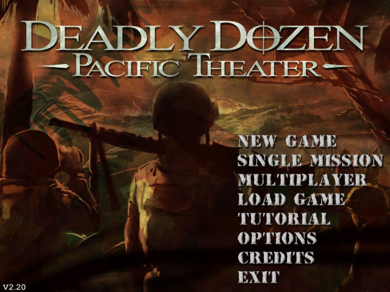
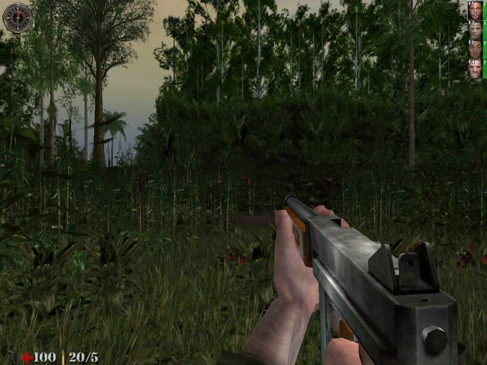

名稱：決死突擊隊2／重返狼穴2：血戰太平洋 (Deadly Dozen: Pacific Theater，英文版) 簡介：nFusion 2002年出品的第一人稱射擊遊戲，由Infogrames代理發行 [待補]。

備註：本版為2.20版 保護：光碟 備註：VirtualBox直接執行顯示速度會過慢，VMware顯示速度正常，但文字與部份貼圖無法 顯示。建議在Win64執行看看（需將DDozen2.exe設成XP相容），不行便搭配dgVoodoo2。 備註：系統內定為第三人稱視角，可到OPTIONS裡更改為第一人稱。